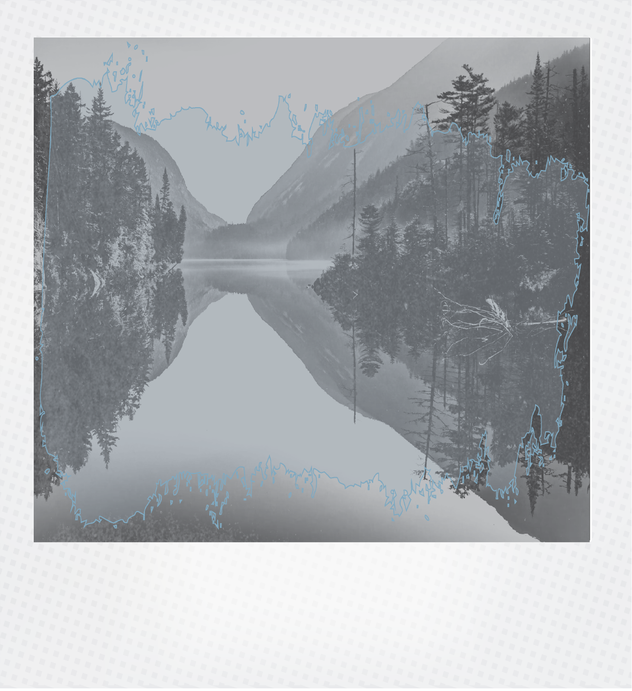

This project is an immersive web based on the experience of literary reading.
By binding four writers from different cultural contexts to specific "landscape images",
it constructs a spiritual geographical map.